Introduction - SCREEN WASHERS AND HEADLAMP WASH/WIPE
- Path
- Descriptions > 50 AUXILIARY UNITS > 5050 SCREEN WASHERS AND HEADLAMP WASH/WIPE > Introduction - SCREEN WASHERS AND HEADLAMP WASH/WIPE
- Kind
- system description
- Applies to
- all engines; all production periods
- Interactive page
- https://sloeber94.github.io/elrnDB-a147/en/#/3026113
Applies to: all engines; all production periods
SPECIFICATIONS:
INTRODUCTION
The system fitted on the vehicle is designed to clean and wash the front windscreen and the rearscreen. There may be an optional system for washing the front light clusters using the windscreen washer fluid under pressure.
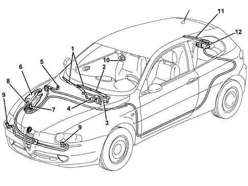
1 - Windscreen wiper blade 2 - Wiper arm 3 - Windscreen wiper mechanism 4 - Windscreen wiper motor 5 - Windscreen washer jets 6 - Reservoir 7 - Windscreen/rearscreen washer pump 8 - Headlamp washer pump 9 - Headlamp washer jets 10 - Rain sensor 11 - Rearscreen wiper arm/blade 12 - Rearscreen wiper motor
RESERVOIR
The reservoir, located in the right wheel arch, supplies the windscreen/rearscreen washer system pump with the necessary water/anti-freeze mixture for cleaning the front and rear windscreens, in addition, if the vehicle is equipped with headlamp washers, it also supplies this system.
The two-way type pump, thanks to the two pipes connected to it, allows the supply of both groups for jets for the front windscreen and the rearscreen.
The capacity of the reservoir guarantees a minimum of 25 washing cycles and can vary from a minimum of 5 litres on versions with headlamp washers to a maximum of 6 litres on versions with headlamp washers.
The reservoir is made from plastic and has outside seats for housing the rearscreen and headlamp washer pump (if fitted).
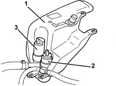
1 - Windscreen washer fluid reservoir 2 - Two-way pump supplying fluid to the jets 3 - Headlamp washer system pump (if fitted)
FRONT WINDSCREEN WASH/WIPE
The front windscreen wash/wipe assembly has the task of cleaning and washing the front windscreen.
There are two types, according to the trim level of the vehicle, standard or de-luxe, which differ considerably through the availability as optional on the de-luxe version of an electronic device for detecting the presence of drops of water on the windscreen (rain sensor).
The windscreen wash/wipe system has impressive innovative features.
- The separation of the control electronics from the motor, unlike previous windscreen wiper systems where the two units were together in a single component.
- The windscreen washer intervention strategy defined by 'smart washing'
- The (optional) presence of a rain sensor
The windscreen wiper mechanism has been developed to ensure optimum cleaning of the area covered by the wipers and to allow the blades to always work in the correct conditions (wiping angle, pressure on the windscreen).
Thanks to the control electronics and according to the position of the right steering column switch unit lever, the system is capable of managing the operation of the direct current type windscreen wiper motor with two windings, i.e. two rotation speeds:
- Low speed: 45 ± 5 rpm
- High speed: 65 ± 7 rpm
In the continuous operation condition the number of revs per minute corresponds to the number of blade strokes.
The rain sensor allows the automatic operation of the system in weather conditions where the driver would be continuously and repeatedly having to operate the system.
The 'smart' washing strategy guaranteed by the control electronics allows the elimination of the residual traces of windscreen washer fluid which are normally left at the end of a traditional windscreen wash/wipe system cycle.
The diagram below shows the front windscreen wiper geared motor assembly and crank gears.
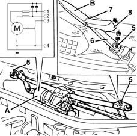
A - Windscreen wiper motor 1 - Second speed 2 - First speed 3 - Cam signal 4 - Earth B - Wiper arm 5 - Drive shaft axis 6 - Block 7 - Fitting pressure zone 8 - Block cover
Components and operation
The Front Windscreen Washer assembly basically consists of the following components:
- two wiper arms fitted with blades; there are two types of windscreen wiper arms: special arms which rest in a lower position (for EEC areas) and traditional arms which do not rest in a lower position (for SAE areas), the blades for the traditional system have a parallel, synchronous movement;
- a direct current electric motor, which enables the movement of the actual arms, which is fitted with a cam (basically comprising an earthed active switch) which informs the electronic control unit if the actual motor is not working; the motor which has a nominal voltage or 12V can operate at voltages between 9 and 16V/ It has a protective thermal switch and circuits for suppressing electro-magnetic interference at both speeds for long wave, medium wave, short wave and ultra short wave frequencies.
- a two-way electric pump which is controlled by the right lever on the steering column switch unit draws the windscreen washer fluid from the reservoir to supply the jets on the bonnet lid via suitable pipes and the jets on the rearscreen shaft bearing.
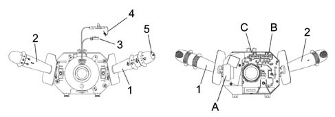
1 - Right lever with front/rear wiper controls 2 - Left lever with lighting/direction indicator controls 3 - Horn/radio controls cable 4 - Air Bag clock spring 5 - Button for trip computer 6 - Internal electronic module ABC - Connectors
The steering colum switch unit is the mechanism which contains the electrical circuits and the switching and automatic release mechanisms for the left lever (direction indicator).
The front part of the steering column switch unit houses the clock spring which provides the interface with the steering wheel.
At the rear is the collar with a retaining band for fastening it to the steering column and additional attachments which guarantee the axial and angular position of the steering column switch unit on the steering column.
The steering column switch unit casing contains the fastenings for the upper and lower half casings.
The electronic module is connected to the steering column switch unit. The rear of the steering column switch unit contains the housings for the electrical connectors.
Multi-purpose switch or right lever
This includes the front and rear wiper controls.
All the commands are activated via the lever or the ring nuts on the actual lever.
There is also a button on the end of the lever which controls the trip computer functions.
Below is a list of the right lever controls:
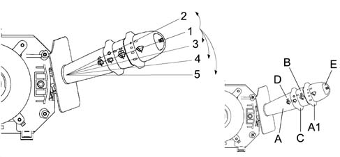
A) Windscreen wiper operation; A1) Windscreen wiper intermittent adjustment / Rain sensor sensitivity B) Windscreen washer operation; C) Rearscreen wiper operation; D) Rearscreen washer operation; E) Trip computer control button
Operating modes
A) WINDSCREEN WIPER OPERATION (LEVER)
WINDSCREEN WIPER OPERATION
The operation is achieved by moving the lever on the steering wheel, there are 5 different positions:
- Pos. 1 = No circuit switched on (STABLE) [REST POSITION];
- Pos. 2 = Antipanic function (UNSTABLE) [ANTI-CLOCKWISE DIRECTION];
- Pos. 3 = Intermittent / Automatic (STABLE) [CLOCKWISE DIRECTION];
- Pos. 4 = 1ST SPEED continuous (STABLE) [CLOCKWISE DIRECTION];
- Pos. 5 = 2ND SPEED continuous (STABLE) [CLOCKWISE DIRECTION];
A1) WINDSCREEN WIPER INTERMITTENT ADJUSTMENT / RAIN SENSOR SENSITIVITY (RING NUT)
This control is at the end of the lever and is operated by rotating a special ring nut in a clockwise direction in four stable positions corresponding to:
- BASIC TRIM LEVEL: Pos. 1 - Pos. 4 = Increasing wiping frequency;
- DE-LUXE TRIM LEVEL: Pos. 1 - Pos. 4 = Increasing rain sensor sensitivity;
Electronic module (incorporated in steering column switch unit)
This is the electronic control unit which controls the operation of the electric windscreen and rearscreen wiper motors and the smart washing functions. It is mechanically secured to the CASING to which it is electrically connected by means of special terminals.
In particular, it controls the operation of the:
- Windscreen wiper (stroke frequency for all trim levels);
- Rearscreen wiper (stroke frequency and power assistance in reverse gear);
- Windscreen washer function ('smart' washing for all versions);
- Rearscreen washer function ('smart' washing for all versions);
- Rain sensor (management of signal coming from sensor - de-luxe version)
Windscreen wiper continuous operation function (1st and 2nd speeds)
The activation of the motor is controlled permanently (positions 4 and 5 of the right lever).
INTERMITTENT OPERATION
The electronic module controls the activation of the motor at low speed managing 4 intermittent modes to which the following times correspond (pause T):
Mode | Tpause [s] | Strokes per minute |
|---|---|---|
1 | 4.7 ± 0.2 | 10 |
2 | 2.7 ± 0.1 | 15 |
3 | 1.7 ± 0.1 | 20 |
4 | 1.1 ± 0.1 | 25 |
B) WINDSCREEN WASHER OPERATION
The windscreen washer is operated by pulling the lever towards the steering wheel, the control is UNSTABLE as a result of which when the lever is released it returns to the rest position.
Windscreen washer function
The activation of the control involves the simultaneous operation of the windscreen wiper in the 1st speed following the 'smart washing' mode, or the activation of the electric pump with a delay of 0.5 secs, between the windscreen wiper strokes to allow the washing first and then the wiping of the wet glass.
After wipe function
Following the activation of the WINDSCREEN WASHER FUNCTION, an additional windscreen wiper stroke is carried out (in 1st seed) after T = 6 secs to remove any traces of fluid from the actual glass.
This function is only activated when the windscreen wiper is not switched on (windscreen wiper control lever in position 1 - no circuit switched on).
Automatic operation (with rain sensor fitted)
If the right lever is placed in the intermittent/A1 automatic position, the rain sensor is activated.
This adjusts the frequency of the windscreen wiper strokes according to the quantity of water on the windscreen. The frequency can vary continuously from 0 (no stroke - glass dry) up to wiping at continuous speed (heavy rain).
The activation of the RAIN SENSOR operates a windscreen wiper stroke as feeback.
It is also possible to alter the sensitivity of the RAIN SENSOR through the ring nut A1 at the end of the right lever.
If the ignition is switched off leaving the lever in the AUTOMATIC position, the RAIN SENSOR places the windscreen wiper system on STAND-BY. When the ignition is later switched on, no wiping cycle is carried out even if a rain sensor is fitted.
To restore the AUTOMATIC operation of the system, carry out any of the following manoeuvres on the steering column switch unit wiper control lever:
- moving the lever from the AUTOMATIC position to any other position and returning it to the AUTOMATIC position;
- altering the sensitivity by turning the RING NUT (increasing or decreasing it).
When restoring the operation of the RAIN SENSOR through one of the movements described above, the windscreen wiper carries out a stroke, even if the glass is dry, to signal the reactivation to the user.
If the signal from the rain sensor has not been received by the steering column switch unit (as a result of breaks in the wiring or malfunctions with the sensor itself), the operation of the windscreen wiper via the right lever in an intermittent/automatic position does not take place according to the intermittent mode described.
Recovery function
When the rain sensor is supplied, it provides at least six output impulses in the first 200 ms of operation, as illustrated in the diagram.
The absence of these six impulses indicates one of the following situations:
- The incorrect operation of the sensor;
- The disconnection of the signal cable;
- The connection of the signal cable to earth;
- The connection of the signal cable to the supply voltage.
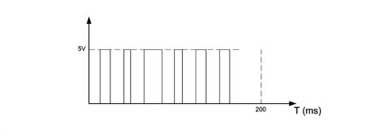
The recovery function makes it possible to identify the presence of one of the malfunctions listed previously (but not which one) as follows:
- with the ignition switched on and each time the user places the lever in the intermittent position, the microcontroller supplies the rain sensor for 200 ms. If the six impulses do not arrive from the rain sensor, the system controlling the wiper functions ignores the subsequent information coming from the sensor and follows the logic described in the 'Windscreen wiper Function'. Once an error situation has been verified, the system continues to operate manually until the key off when the error condition is zeroed.
- During normal operation of the rain sensor: if the signal coming from the sensor remains at the low logic level for longer than 2 seconds, the software module for the sensor notifies the software module for the wiper motor that there is a problem. The windscreen wiper motor control system reacts to this information, operating the windscreen wiper according to the logic described in the 'Windscreen wiper Function'.
Windscreen washer/rearscreen washer electric pump
The electric windscreen washer pump is operated via the right steering column switch unit lever.
By moving the right steering column switch unit lever towards the driver (unstable position) the two-way pump is electrically supplied in order to be able to supply the front jets; conversely, pushing the lever towards the dashboard causes the rotation of the pump in the opposite direction and the liquid to come out towards the rearscreen washer pipe with the supply of the rear jets.
Heated jets (and non-heated ones)
Heated jets usually consist of a casing, which defines the aesthetic shape, containing a housing where an insert which produces the jet is fitted and a heating system which allows the jet to come out even at low temperatures.
The positioning of the insert prevents the jet from striking surfaces other than the windscreen, the rearscreen or the headlamp.
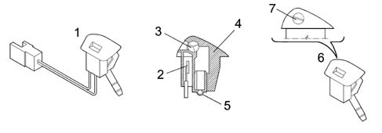
1 - Windscreen washer jet with resistance incorporated 2 - PTC resistance 3 - Jet 4 - Jet body 5 - Pipe carrier 6 - Spray without resistance 7 - Notch for adjusting windscreen washer jet height (Warning: plastic screw)
Operation
The heated jets are connected to the dashboard control unit under the same relay which supplies the heating circuit for the electric mirrors and the heated rear windscreen and are activated through the same operating strategies as these two circuits, namely:
- By pressing the button for the heated rear windscreen connected to the climate control connector (NCL) and therefore sent as a state to the body computer connector (NBC) via the CAN network.
- By pressing the MAX-DEF button (as above).
- Automatically once, the same way as for the manual operation, if the ignition is switched on when the outside temperature is > 3° C.
This timed operation is not implemented if the battery is not sufficiently charged and if the outside air temperature sensor is faulty.
REARSCREEN WASH/WIPE
This device has the task of cleaning the rearscreen effectively. It consists of a single motor with a 12 V supply which can operate at voltages between 9 and 16 V; it has a twin metallic type overload cut-out and does not have protection against radio interference.
The wiper is constructed from a single wiper element made of a plastic arm and the linkage is internal. The jet is incorporated in the engine dust cover.
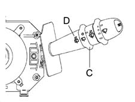
C - Rearscreen wiper control D - Rearscreen washer control
C) rearscreen wiper control (ring nut)
This control is on the lever and is activated by turning a special ring nut.
The control has 2 STABLE positions and is turned in a clockwise direction:
- Pos. 1 = No circuit switched on;
- Pos. 2 = Rearscreen wiper operating intermittently.
D) rearscreen washer control (lever)
It is operated by pushing the lever towards the dashboard, the operation is UNSTABLE as a result of which when the lever is released it returns to the rest position.
The activation of the control involves the simultaneous operation of the rearscreen wiper with the 'smart washing' function (windscreen washer function).
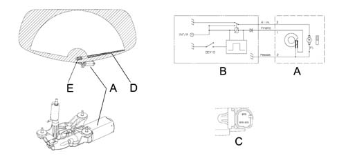
1 - Brake 2 - Earth 3 - Supply A - Rearscreen wiper motor B - Control on steering column switch unit C - Connector D - Wiper blade E - Notch for adjusting windscreen washer jet height (Warning: plastic screw)
Rearscreen wiper function
The electronic moduel controls the intermittent operation of the rearscreen wiper motor in way which is similar to that described for the windscreen wiper.
Rearscreen wiper function with windscreen wiper activated
The rearscreen wiper is activated in synchronization with the operation of the windscreen wiper, but at half the frequency (one impulse sent to the rearscreen wiper for every two impulses sent to the windscreen wiper).
Automatic function
In addition to the manual operation described previously, the system is automatically activated via the body computer which sends information to the steering column switch unit electronic module.
When, with the windscreen wiper activated in either manual or automatic mode (rain sensor), reverse gear is engaged, the dashboard control unit receives the signal from the reverse switch and transmits it to the body computer which sends it to the steering column switch unit electronic module which activates the rearscreen wiper motor.
Steering column switch unit electronic module pin-out
The diagram below shows the pin-out for the steering column switch unit electronic module (rear view)
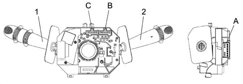
1 - Right lever for front/rear wiper controls 2 - Left lever for lighting/direction indicator controls A - Right lever connector B - Steering column switch unit rear view connectors C - Steering column switch unit rear view connectors
The table illustrates the electronic module pin-out
Connector | Pin | Operation | Nominal current [A] |
|---|---|---|---|
A | 1 | Horn coil operation | 0.2 |
A | 2 | Signal from rain sensor | 0.05 |
A | 3 | Reverse signal for enabling rearscreen wiper | 0.05 |
A | 4 | Rain sensor supply | |
A | 5 | Headlamp washer go ahead | 0.05 |
A | 6 | Windscreen wiper cam signal | 0.07 |
A | 7 | Power earth | 2.5 - 3.5 |
A | 8 | Second windscreen wiper speed | 1.7 - 4.0 |
A | 9 | Windscreen wiper first speed/intermittent | 1.1 - 2.9 |
A | 10 | Two-way pump (rearscreen washer positive) | 2.6 - 3.5 |
A | 11. | INT/A for windscreen wiper/pump | 6.5 |
A | 12. | Two-way pump (windscreen washer positive) | 2.5 - 3.5 |
B | 1 | Right direction indicator/parking control | 0.05 |
B | 2 | Main beam headlamps/flasher control | 0.05 |
B | 3 | Dipped headlamps control | 0.05 |
B | 4 | Preparation for rear fog lamp go ahead | 0.2 |
B | 5 | Earth for side lights control | 0.05 |
B | 6 | Side lights control to Body Computer | 0.05 |
C | 1 | Available | |
C | relay | Rearscreen wiper supply | 3.5 |
C | 3 | Rearscreen wiper motor supply | 3.5 |
C | 4 | Rearscreen wiper brake | 3.5 |
C | 5 | Signal earth | 0.5 |
C | 6 | Left direction indicator/parking control | 0.05 |
HEADLAMP WASH/WIPE
The headlamp wash/wipe system is designed to clean the surface of the front light clusters and keep them in excellent condition.
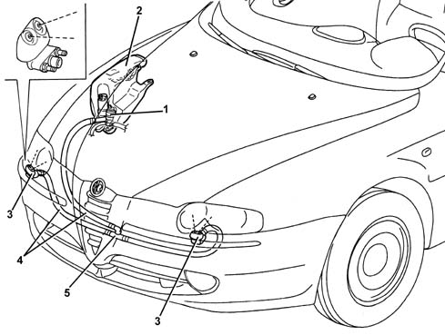
1 - Headlamp washer electric pump 2 - Headlamp washer fluid reservoir 3 - Left and right jets 4 - Pipe 5 - Three-way connector
The headlamp washer system consists of:
- a special electric pump on the windscreen washer fluid reservoir;
- two devices equipped with spray jets, secured to the bumper by bolts;
- three connecting pipes between the pump and the devices inside the bumper;
Operating cycle
The pressure washing type system uses the fluid contained in the windscreen washer reservoir. It has a capacity of 6 litres on versions with headlamp washers; 5 litres on versions without headlamp washers, to guarantee 25 washing cycles.
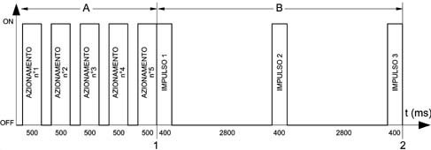
1 - Start of cycle 2 - End of cycle 6800 msec. A - Windscreen washer (non automatic cycle of 5 activations with t < 500 ms non continuous with memory in Body Computer with dipped headlamps on) B - Headlamp washer (automatic cycle controlled by relay under dashboard)
This function is activated when the following conditions occur:
- ignition switched ON
- dipped/main beam headlamps on
- headlamp washer control on steering column switch unit lever activated.
Activation takes place through the special windscreen washer control on the steering column switch unit which identifies the action of washing the windscreen. The Body Computer Connector (NBC) acquires the windscreen washer activation time and increases a counter. When the counter reaches 5, the NBC operates the steering column switch unit timer circuit which supplies the headlamp washer pump relay for a period of time equal to the cycle described above. In practice, every 5 times the windscreen washer is switched on, an automatic headlamp washer cycle is initiated.
The Body Computer also informs the CAN network of the activated washing state allowing the climate control connector (NCL) to use this information to close the air vents and prevent the smell of the detergent fluid from entering the passenger compartment.
Being controlled by the pump supply pressure, the operation of the jets is characterized by an intervention frequency equal to that of the actual pump.
Each time the headlamp washer relay is activated the counter is zeroed by the NBC.
RAIN SENSOR ELECTRONIC UNIT
Specifications:
The rain sensor, available on request on the top of the range version, differs compared with the other types fitted on group vehicles, in that it is not stuck to the window and does not require a specific electronic control unit, but rather takes advantage of the windscreen wiper electronic control unit.
Operation
The device, which operates on infrared wavelengths based on the principle of the refraction of a light beam through glass, allows the automatic adjustment of the number of windscreen wiper arm strokes in a manner proportional to the intensity of the rain.
In the case of a failure, the windscreen wiper unit instantly recognizes this condition and the operation automatically returns to manual mode.
System features
The device consist of a sensitive element (1) containing the infrared ray transmission elements and the receiver element.
A housing structure (2) and a cover (3) which protect the sensitive element.
A contact disc (4) covered with silicon material (SilGel612) for correct adhesion to the glass.
If a new component is being fitted in a service situation, check that there are no air bubbles remaining between the glass and the sensor and apply a load of at least 50N to ensure that any bubbles are removed.
The sensor should not be subjected to vibrations; when fitting, check that there is no irregular interference between the sensor and the support elements with the exception of the retaining spring.
Use ACETONE to remove any silicon residues from the window before fitting a new component.
The sensor receives a 12V supply from the battery and the signals sent by the sensor to the wiper control unit are 5V.
The internal resistance of the sensor is around 10 ohm.
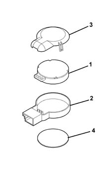
1, Sensitive element 2, Housing structure 3, Cover 4, Contact disc
Performance
The device is capable of measuring the dimensions, the number and the quantity of drops of rain on the window according to the variation in the reflection of the infrared signals used as the detection method.
The variation in the refraction mode, compared with an initial value automatically preset by the actual sensor, causes the production of electrical signals by the sensor.
The signals from the device which are processed by the windscreen wiper electronic control unit, allow the latter to select which of the two continuous operating speeds should be activated.
The presence of dirt, scratches or streaks on the glass does not alter the operation of the device which, when switched on, are recognized by the sensor as 'static disturbances'.
The device is activated by moving the lever on the steering column switch unit from the OFF position or 1st SPEED to the INTERMITTENT/AUTOMATIC position.
The sensitivity with which 'dynamic disturbances' (drops of rain) are detected can be altered via the ring nut on the actual lever with four settings varying from 'min' to 'max'.
Composition
The rain sensors consists of two sets of four infrared LEDs, arranged in a circle, and a receiver element in the centre of the LEDs.
The sensor, housed behind the rear view mirror, is kept in contact with the windscreen by a spring which acts on a protective cover behind the actual mirror.
The LEDs and the receiver, immersed in a polymer, are connected to the windscreen wiper control unit by means of wiring with a connector; in this way the sensor can be easily removed after having removed the cover and disconnected the connector.